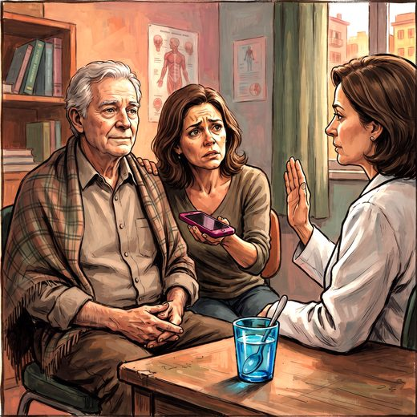

Consulta rápida à beira do leito
Condutas, doses e interações.
Referências da aula · 3
- Jack CR Jr, Andrews JS, Beach TG, Buracchio T, Dunn B, Graf A, et al. Revised criteria for diagnosis and staging of Alzheimer's disease: Alzheimer's Association Workgroup. Alzheimers Dement. 2024;20(8):5143-69. PMID 38934362. doi:10.1002/alz.13859.PubMedDOI
- Serrano-Pozo A, Escott-Price V, Grinberg LT, Pascoal T, Suárez-Calvet M, Dubois B, et al. Alzheimer's disease. Lancet. 2026;407:2241-62. PMID 42208565. doi:10.1016/S0140-6736(26)00198-4.PubMedDOI
- Palmqvist S, Whitson HE, Allen LA, et al. Alzheimer's Association clinical practice guideline on the use of blood-based biomarkers in the diagnostic workup of suspected Alzheimer's disease within specialized care settings. Alzheimers Dement. 2025;21(7):e70535. PMID 40729527. doi:10.1002/alz.70535.PubMedDOI
Documentos oficiais
Leis e publicações do Ministério da Saúde sobre o cuidado da pessoa idosa, de acesso livre.
Abrir os documentos